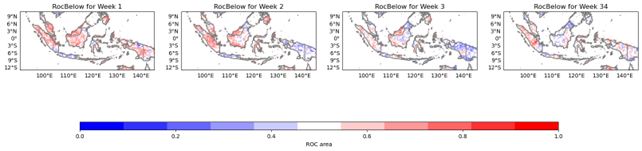
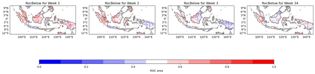
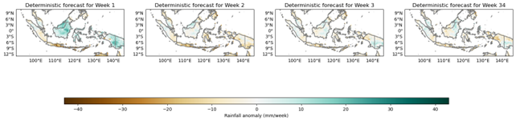
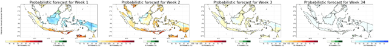

PyCPT for Subseasonal Forecasts in Indonesia
1 Introduction
PyCPTis a Python library for statistical analysis and forecasting of climate data. It provides a range of tools for time series analysis, including trend analysis, seasonal decomposition, and correlation analysis. These tools can be used to identify patterns and relationships in climate data, which can then be used to develop forecasts for subseasonal climate conditions.
Subseasonal forecasting is an important area of research in climate science, particularly in regions such as Indonesia where the climate is strongly influenced by the Madden-Julian Oscillation (MJO) and other large-scale climate drivers that operate on a timescale of several weeks to a few months. By developing subseasonal forecasts, it is possible to anticipate changes in climate conditions and take measures to prepare for and adapt to these changes.

Figure 1. PyCPT S2S. Source: https://bitbucket.org/py-iri/iri-pycpt/src/master/
To use PyCPT for subseasonal forecasting in Indonesia, the first step is to acquire and preprocess the relevant climate data. This may include data on temperature, precipitation, and other climate variables, as well as data on MJO and other large-scale climate drivers. The data should be cleaned, validated, and formatted into a suitable time series format for analysis.
Once the data has been prepared, it can be analyzed using PyCPT’s time series analysis tools. This may involve identifying trends, subseasonal patterns, and correlations between different climate variables. These insights can then be used to develop statistical models for forecasting subseasonal climate conditions.
PyCPT includes a range of statistical models for subseasonal forecasting, including autoregressive integrated moving average (ARIMA) models, vector autoregression (VAR) models, and dynamic linear models (DLMs). These models can be used to make point forecasts of subseasonal climate conditions, as well as to estimate the uncertainty associated with these forecasts.
In addition to point forecasts, PyCPT can be used to generate probabilistic forecasts of subseasonal climate conditions. This can be particularly useful in regions such as Indonesia, where the climate is highly variable and uncertain. Probabilistic forecasts can provide information on the likelihood of different climate scenarios, which can help decision-makers to plan for and adapt to future climate conditions.
PyCPT also includes tools for evaluating the accuracy and performance of different forecasting models. These tools can be used to compare different models and identify the most effective approach for forecasting subseasonal climate conditions in Indonesia.
In addition to its forecasting capabilities, PyCPT can also be used for climate impact assessments and scenario planning at the subseasonal timescale. By simulating different subseasonal climate scenarios, it is possible to assess the potential impacts of future climate conditions on agriculture, water resources, and other sectors. This information can then be used to develop adaptation strategies and policies.
PyCPT is a powerful tool for subseasonal forecasting in Indonesia and other regions with complex and variable climates. Its range of statistical tools and models, combined with its ease of use and integration with Python, make it a valuable resource for climate scientists, researchers, and decision-makers.
By using PyCPT to develop accurate and reliable subseasonal forecasts, it is possible to better anticipate and adapt to the impacts of climate change in Indonesia. This can help to reduce the risks and costs associated with extreme weather events, protect vulnerable populations, and promote sustainable development.
2 PyCPT set-up
I have written notes on how to set up the PyCPT from preparing the installation (Anaconda and CPT), supporting files, and modified notebook for running a sub seasonal and seasonal forecast in Indonesia. It’s accessible via this link.
3 Configuring PyCPT
To develop a subseasonal Multi-Model Ensemble (MME), we will utilize the CFSv2, GEFSv12, and FIM SubX models. Similar to the seasonal forecasting case, in subseasonal forecasting, the application of Model Output Statistics (MOS) using PyCPT necessitates a series of decisions. These include selecting the appropriate SubX model and observed dataset, choosing the MOS methodology, selecting predictor and predictand variables, specifying the spatial domains of interest, choosing the forecast date and training season, and selecting the forecast lead intervals. It is recommended that you first designate a case name for your experiment, establish a working directory, and indicate the root directory for the CPT tool.
Regarding the SubX model and observed dataset, precipitation data from several sources, including ECMWF, NCEP-CFSv2, EMC-GEFSv12, ECCC-GEPS6, and ESRL-FIM, can be utilized as predictors. The spatial resolution of the SubX data is 1 degree, while S2S data is 1.5 degrees, but note that the native model resolutions may be more precise.
########Model (choose between ECMWF, CFSv2, GEFS, CFSv2_SubX, GEPS6)
model= [‘CFSv2_SubX’, ‘ESRL’]
The predictand variable of choice is precipitation from CHIRPS, although other options, such as TRMM, CPC, IMD1deg, and IMDp25deg, can be selected. It is worth noting that temperature will soon be added as a predictand, but rainfall frequency is not yet available in the subseasonal version.
########Obs (choose between CHIRPS, TRMM, CPC, IMD1deg, IMDp25deg)
obs=‘CHIRPS’
Choice of MOS method is another critical consideration. CCA, PCR, and no-MOS can all be employed with the subseasonal models, and ELR, which is applied gridpoint-by-gridpoint, is under development. CCA is presently recommended as the default option.
########MOS method (choose between None, PCR, CCA and ELR)
MOS=‘CCA’
For the forecast date and training season length, subseasonal forecasts are initialized every week, and the training sample of hindcasts can be increased by selecting multiple start times each year, as long as these fall within a climatologically homogeneous season, such as a monsoon season.
########Forecast date
##– If ECMWF, it needs to be a Monday or a Thursday! CFSv2: any day; GEFS: Wednesdays.
mon=‘Mar’ # Forecast month
fyr=2023 # Forecast year
fday=1 # Forecast day (Monday and Thursday in ECMWF model; yesterday in CFSv2: real time)
#training_season=mon
training_season=‘Feb-Apr’ # with *mon* in the middle, e.g., ‘Feb-Apr’ if mon=‘Mar’
Predictor and predictand spatial domains should be chosen carefully.
Spatial domain for predictor
nla1=16 # Northernmost latitude
sla1=-18 # Southernmost latitude
wlo1=85 # Westernmost longitude
elo1=150 # Easternmost longitude
# Spatial domain for predictand
nla2=11 # Northernmost latitude
sla2=-13 # Southernmost latitude
wlo2=90 # Westernmost longitude
elo2=145 # Easternmost longitude

Figure 2. Predictor and Predictand domain.
While forecast lead time intervals, which determine how far into the future is predicted and over what time frame the forecast is averaged, should be set according to the desired outcome. The exact values of day1 and day2 depend on the selected model and variable, and careful attention should be paid to the instructions in the Jupyter notebook.
########Forecast lead interval – This counts using L, the lead time; e.g., ECMWF L=0..46 (NOT calendar days)
nwk=4 # Number of weeks to process (leads)
# Lists for looping over lead times – ALL these arrays should have the same dimension (see nwk above), as they correspond
wk = [1 ,2 ,3 ,34 ,4 ] # week-lead number label (e.g., corresponding to week1, week2, week3, week4, week1-4/month 1)
wknam= [‘Week 1’,‘Week 2’,‘Week 3’,‘Week 3-4’,‘Month 1’] #naming the weeks (for plots) –can use a different language here
day1 = [1 ,7 ,14 ,14 ,21 ] # first lead day of target weeks
day2 = [7 ,14 ,21 ,28 ,28 ] # last lead day of target weeks
# ECMWF - first day is day 0, 0000Z accumulated rainfall; specify day1=1 for week 1
# GEFS - first day is day 0.5 (daily average rainfall rate); specify day1=0 for week 1
# CFSv2 - first day is day 1, 0000Z accumulated rainfall over the first day; specify day1=1 for week 1
Training and verification periods should be determined based on the limited hindcast period, which must be used to both train and assess skill, each of which requires large sets of independent non-overlapping data. PyCPT-Subseasonal uses Retroactive Forecasting to train and verify the MOS model, which requires choosing the length of initial training period and update interval.
lit=28 # Initial training period for retroactive forecasts (in timesteps)
liti=10 # Update interval for retroactive forecasts (in timesteps)
A simple rule of thumb is to set the length of the initial training period equal to 50% of the hindcast dataset and the update interval to once a year. The values of the initial training period and update interval should be adjusted if necessary, but note that overfitting the MOS model may occur if skill results are excessively “tuned” to maximize them without some independent data available to re-test the model.
########Model-dependent parameters
if model==‘CFSv2’:
hstep = 7 # use all starts in the trainng period with this daily step between them
nlag = 3 # length of the lagged ensemble in days
ntrain= 55 # Length of training period (5 weeks x 11 hindcast years) (363 before)
lit = 28
liti = 10
elif model==‘ECMWF’ or model==‘ECMWFrt’:
hstep = 0 # bogus but needed by functions (eliminate in the future)
nlag = 0 # bogus but needed by functions (eliminate in the future)
ntrain= 160 # Length of training period
lit = 110
liti = 20
elif model==‘GEFS’:
hstep = 0 # bogus but needed by functions (eliminate in the future)
nlag = 0 # bogus but needed by functions (eliminate in the future)
ntrain= 219 # Length of training period (1999-2016)
lit = 100
liti = 20
elif model==‘GEPS6’:
hstep = 0 # bogus but needed by functions (eliminate in the future)
nlag = 0 # bogus but needed by functions (eliminate in the future)
ntrain= 260 # Length of training period (1998-2017)
GEPShdate1 = ‘0000 4 Jun’ # first hindcast date each year in training season
# Must be a THURSDAY in the forecast year since GEPS is an on-the-fly model
GEPShdate1 = parse.quote(GEPShdate1)
lit = 120
liti = 20
elif model==‘CFSv2_SubX’:
hstep = 7 # use all starts in the trainng period with this daily step between them
nlag = 3 # length of the lagged ensemble in days
ntrain= 234 # Length of training period for 3 month season (1638/7=234)
lit = 100
liti = 20
Finally, it is common to divide data into three parts: the training, validation, and test sets, to check the model’s performance on data not seen during training.
4 PyCPT outputs
The CPT output provides several diagnostic plots and statistical metrics that can be used to assess the quality of the subseasonal forecast. These diagnostics include:
4.1 EOF analysis
EOF analysis (Empirical Orthogonal Function analysis) is a method used to identify dominant patterns of variability in a dataset. PyCPT’s EOF analysis map produces maps of X EOF Spatial Loadings, Y EOF Spatial Loadings, and charts of X and Y Principal Components.
{kind=link}
Figure 3. EOF analysis result for week 1.
The X EOF Spatial Loadings map shows the spatial pattern of variability for the Xth EOF mode. This map is useful for understanding the dominant spatial patterns of the variability in the data. The Y EOF Spatial Loadings map shows the spatial pattern of variability for the Yth EOF mode, and is useful for identifying the dominant spatial patterns of the second variable in the dataset.
The charts of X and Y Principal Components show the time evolution of the principal components for the Xth and Yth EOF modes, respectively. The X Principal Component chart shows how the Xth mode of variability changes over time, while the Y Principal Component chart shows how the Yth mode of variability changes over time. These charts can be used to identify the times when the dominant patterns of variability are strongest, and how they change over time.
Overall, the EOF analysis map produced by PyCPT is a powerful tool for identifying dominant patterns of variability in subseasonal forecast datasets. By visualizing the spatial patterns and time evolution of these patterns, forecasters can gain a better understanding of the underlying dynamics of the forecast data, which can help inform better forecasting decisions.
4.2 CCA analysis
The Canonical Correlation Analysis (CCA) is a statistical technique used in PyCPT to explore relationships between two multivariate datasets X and Y. The CCA analysis in PyCPT is applied to subseasonal forecast data to identify patterns of covariability between climate predictors and predictands.

Figure 4. EOF analysis result for week 1.
The output of the CCA analysis map in PyCPT includes three types of plots:
Maps of X CCA Spatial Loadings: The CCA spatial loadings are maps that show the correlation between the predictor variables and the predictand variable at each location. The values in the map represent the strength and direction of the correlation.
Maps of Y CCA Spatial Loadings: The Y CCA spatial loadings are maps that show the correlation between the predictand variable and the predictor variables at each location. The values in the map represent the strength and direction of the correlation.
Charts on X and Y Temporal Scores: The temporal scores are time series that represent the variability of the predictor variables and the predictand variable over time. The charts show how the predictor variables and the predictand variable vary together over time.
The CCA analysis map is useful for identifying regions where the predictor variables and the predictand variable are highly correlated, which can help in developing subseasonal forecast models. By analyzing the spatial loadings and temporal scores, users can identify the patterns of variability in the predictor variables and the predictand variable that are driving the correlations.
4.3 Skill maps
The Skills map is a set of skill scores that measures the performance of the forecast model against the observed data. The following skill scores are included in the Skills map:
4.3.1 Spearman
Spearman’s rank correlation coefficient is a measure of the strength and direction of the relationship between two variables. It is particularly useful for non-linear relationships. Spearman’s rank correlation coefficient ranges from -1 to 1, where a coefficient of 1 indicates a perfect positive correlation, 0 indicates no correlation, and -1 indicates a perfect negative correlation.

Figure 5. Spearman
Strengths:
- Spearman’s rank correlation coefficient is useful for evaluating the relationship between two variables when the relationship is non-linear.
- It is a robust measure that is not sensitive to outliers.
- It can be used to evaluate the skill of both deterministic and probabilistic forecasts.
Weaknesses:
- Spearman’s rank correlation coefficient is less sensitive to small differences than other correlation measures.
- It is not suitable for evaluating the skill of forecasts with categorical or ordinal data.
- Spearman’s rank correlation coefficient does not provide information about the magnitude of the correlation.
Potential applications:
- Spearman’s rank correlation coefficient can be used to evaluate the skill of forecasts in a variety of contexts, such as weather forecasting, hydrological forecasting, and financial forecasting.
- It can be used to evaluate the relationship between different variables in a system, which can be useful for identifying potential drivers of a particular phenomenon.
- It can be used to identify situations in which a forecast adds value over a reference forecast, which can be useful for decision-making and risk management.
4.3.2 2AFC (Two-Alternative Forced Choice)
2AFC is a binary classification skill score that compares the forecast probabilities to a threshold. It is defined as the percentage of times that the forecast probability is higher (or lower) than the threshold when the observed event occurs (or does not occur). A perfect forecast has a 2AFC of 100%, while a forecast with no skill has a 2AFC of 50%.
{kind=link}
Figure 6. 2AFC
Strengths:
- 2AFC is a simple and intuitive skill score that can be used to evaluate binary forecasts.
- 2AFC is a useful skill score for evaluating forecasts in situations where only two possible outcomes are of interest (such as a yes/no decision).
- 2AFC is robust to changes in the threshold, so it can be used to evaluate forecasts with different probability thresholds.
Weaknesses:
- 2AFC does not take into account the magnitude of the forecast probabilities, only their direction relative to the threshold.
- 2AFC assumes that the cost of false positives and false negatives is equal, which may not always be the case in practice.
- 2AFC may not be as informative as some other skill scores for evaluating probabilistic forecasts.
Potential applications:
- 2AFC can be used to evaluate the skill of binary forecasts in a variety of contexts, such as weather forecasting, sports betting, and medical diagnosis.
- 2AFC can be used to compare the skill of different binary forecasts or to evaluate the value of adding new information to an existing binary forecast.
- 2AFC can be used to identify situations in which a binary forecast adds value over a simple decision rule (such as always betting on the favorite in a sports game).
4.3.3 RocAbove and RocBelow (Receiver Operating Characteristic)
RocAbove and RocBelow are binary classification skill scores that compare the forecast probabilities to a threshold. They are defined as the area under the ROC curve above (RocAbove) or below (RocBelow) the threshold. A perfect forecast has a RocAbove (or RocBelow) of 1, while a forecast with no skill has a RocAbove (or RocBelow) of 0.5.
 

Figure 7. RocAbove and RocBelow.
Strengths:
- RocAbove and RocBelow are skill scores that can be used to evaluate binary forecasts in a variety of contexts.
- RocAbove and RocBelow are more informative than some other binary classification skill scores (such as 2AFC) because they take into account both the magnitude and direction of the forecast probabilities.
- RocAbove and RocBelow can be used to evaluate the skill of binary forecasts with different probability thresholds.
Weaknesses:
- RocAbove and RocBelow assume that the cost of false positives and false negatives is equal, which may not always be the case in practice.
- RocAbove and RocBelow may not be as intuitive as some other skill scores for some users.
- RocAbove and RocBelow may not be as informative for evaluating probabilistic forecasts as some other skill scores, such as RPSS or Ignorance.
Potential applications:
- RocAbove and RocBelow can be used to evaluate the skill of binary forecasts in a variety of contexts, such as weather forecasting, medical diagnosis, and credit scoring.
- RocAbove and RocBelow can be used to compare the skill of different binary forecasts or to evaluate the value of adding new information to an existing binary forecast.
- RocAbove and RocBelow can be used to identify situations in which a binary forecast adds value over a simple decision rule.
4.3.4 RPSS (Ranked Probability Skill Score):
RPSS is a skill score that compares the forecast probabilities with the observed frequencies. It is defined as the difference between the skill score of the forecast and that of a reference forecast, divided by the maximum possible improvement in the skill score over the reference forecast. A perfect forecast has an RPSS of 1, while a forecast with no skill has an RPSS of 0.

Figure 8. RPSS.
Strengths:
- RPSS is a skill score that can be used to evaluate probabilistic forecasts.
- It is a more informative measure of skill than some other skill scores (such as the Brier Score) because it takes into account the skill of the reference forecast.
- RPSS can be useful for identifying situations in which a probabilistic forecast adds value over a reference forecast (such as climatology or persistence).
Weaknesses:
- RPSS requires the use of a reference forecast, which may not always be available or appropriate.
- RPSS can be sensitive to the choice of reference forecast, so it is important to choose a reference forecast that is appropriate for the specific application.
- RPSS may not be as intuitive as some other skill scores, such as the Brier Score or the ROC curve, for some users.
Potential applications:
- RPSS can be used to evaluate the skill of probabilistic forecasts in a variety of contexts, such as weather forecasting, hydrological forecasting, and financial forecasting.
- RPSS can be used to compare the skill of different probabilistic forecasts or to evaluate the value of adding new information to an existing probabilistic forecast.
- RPSS can be used to identify situations in which a probabilistic forecast adds value over a reference forecast, which can be useful for decision-making and risk management.
4.3.5 Ignorance
Ignorance is a skill score that measures the degree to which the forecast adds information beyond the climatological probability. It is defined as the difference between the information gained from the forecast and the information gained from the climatology, divided by the maximum possible information gain. A perfect forecast has an Ignorance score of 1, while a forecast with no skill has an Ignorance score of 0.

Figure 9. Ignorance.
Strengths:
- Ignorance provides a measure of the degree to which the forecast adds value beyond the climatological probability, which can be useful for decision-making and risk management.
- Ignorance can be used to evaluate the skill of probabilistic forecasts in a variety of contexts, such as weather forecasting, hydrological forecasting, and financial forecasting.
- Ignorance can be useful for identifying situations in which a probabilistic forecast adds value over the climatological probability.
Weaknesses:
- Ignorance requires the use of a climatological probability, which may not always be appropriate or accurate.
- Ignorance may not be as intuitive as some other skill scores, such as the Brier Score or the ROC curve, for some users.
Potential applications:
- Ignorance can be used to evaluate the skill of probabilistic forecasts in a variety of contexts, such as weather forecasting, hydrological forecasting, and financial forecasting.
- Ignorance can be used to compare the skill of different probabilistic forecasts or to evaluate the value of adding new information to an existing probabilistic forecast.
- Ignorance can be used to identify situations in which a probabilistic forecast adds value over the climatological probability, which can be useful for decision-making and risk management.
4.3.6 GROC (Gross Relative Operating Characteristic)
GROC is a skill score that measures the degree to which a forecast is better than random. It is defined as the area under the ROC curve, divided by the maximum possible area under the ROC curve. A perfect forecast has a GROC of 1, while a forecast with no skill has a GROC of 0.5.

Figure 10. GROC.
Strengths:
- GROC is a skill score that can be used to evaluate the skill of probabilistic forecasts in a variety of contexts, such as weather forecasting, hydrological forecasting, and financial forecasting.
- GROC can provide a measure of the degree to which a forecast is better than random, which can be useful for decision-making and risk management.
- GROC is a more informative measure of skill than some other skill scores (such as the Brier Score) because it takes into account the entire range of possible forecast probabilities.
Weaknesses:
- GROC may not be as intuitive as some other skill scores, such as the Brier Score or the ROC curve, for some users.
Potential applications:
- GROC can be used to evaluate the skill of probabilistic forecasts in a variety of contexts, such as weather forecasting, hydrological forecasting, and financial forecasting.
- GROC can be used to compare the skill of different probabilistic forecasts or to evaluate the value of adding new information to an existing probabilistic forecast.
- GROC can be used to provide a measure of the degree to which a forecast is better than random, which can be useful for decision-making and risk management.
4.4 Forecast maps
The Forecasts Map is an output of PyCPT that provides maps of probabilistic and deterministic forecasts for a given forecast variable. The probabilistic forecast shows the probability of the forecast variable exceeding a certain threshold, while the deterministic forecast shows the expected value of the forecast variable.
 
Figure 11. Deterministic and Probabilistic forecast map.
Strengths:
- The probabilistic forecast provides a range of possible outcomes with associated probabilities, which can be useful for decision-making and risk management.
- The deterministic forecast provides a single value that can be used as a point estimate for the forecast variable, which may be useful in some applications.
- The forecasts map can provide a visual representation of the forecasted values, making it easier to identify areas of potential impact or concern.
Weaknesses:
- The accuracy of the forecasts may be limited by the quality and availability of the input data.
- The probabilistic forecast may be difficult for some users to interpret, particularly if they are not familiar with probability concepts.
- The deterministic forecast may not accurately capture the full range of possible outcomes.
Potential applications:
- The forecasts map can be used in a variety of contexts, such as weather forecasting, hydrological forecasting, and financial forecasting.
- The probabilistic forecast can be particularly useful in situations where there is a high degree of uncertainty, such as in long-range weather forecasting or in predicting the likelihood of extreme events.
- The deterministic forecast may be useful in some applications where a single point estimate is sufficient, such as in short-term weather forecasting or in predicting the expected value of a financial variable.
4.5 Flexible Forecast maps
The Flexible Forecasts map produced by PyCPT shows the probability (%) of exceeding the 50th percentile for a given forecast period. This map is particularly useful for decision-making as it provides information on the likelihood of exceeding the median value for a given variable.
{kind=link}
Figure 12. Flexible forecast map.
Strengths:
- The Flexible Forecasts map provides a quick and easy way to assess the probability of exceeding the median value for a given variable.
- This map can be particularly useful for decision-making in a variety of applications, including agriculture, water management, and energy planning.
- The 50th percentile is a commonly used reference point in decision-making, making this map easy to interpret.
Weaknesses:
- The Flexible Forecasts map provides a limited view of the forecast distribution, as it only shows the probability of exceeding the median value.
- This map does not provide information on the tails of the distribution, which may be important for certain applications.
- The accuracy of the forecast probabilities depends on the skill of the underlying model, which can vary depending on the variable being forecast and the forecast lead time.
Potential applications:
- The Flexible Forecasts map can be used in a variety of decision-making contexts, including agricultural planning (e.g., planting decisions), water resource management (e.g., reservoir operations), and energy planning (e.g., electricity generation).
- This map can also be useful in risk management contexts, as it provides information on the likelihood of extreme events (i.e., events that exceed the median value).
- The Flexible Forecasts map can be used in combination with other forecast products (e.g., deterministic or probabilistic forecasts) to provide a more complete picture of the forecast distribution.
4.6 Flexible Forecast at a specific location
Flexible Forecasts for a particular location is a tool that provides probabilistic forecast information for a specific location. It produces a chart of probability of exceedance and probability density function, showing the likelihood of different outcomes for a particular forecast variable (such as temperature or precipitation) at a specific location.
{kind=link}
Figure 12. Flexible forecast at Kebun raya Bogor, with coordinates: 106.79739, -6.59800
Strengths:
- Provides probabilistic forecast information for a specific location, which can be useful for decision-making and risk management at the local level.
- Shows both the probability of exceedance and the probability density function, providing a comprehensive view of the forecast distribution.
- Can be used to compare different forecast models or scenarios for a specific location.
Weaknesses:
- May not be as useful for large-scale decision-making or risk management, as it only provides information for a single location.
- May require expertise in interpreting probability distributions and making decisions based on uncertain information.
Potential applications:
- Can be useful for local decision-making and risk management, such as in agriculture or energy management.
- Can be used to compare different forecast models or scenarios for a specific location, helping to identify the most likely outcomes and potential risks.
- Can be used in conjunction with other forecast tools and information to inform decision-making and risk management at the local level.
Overall, the CPT output provides a comprehensive assessment of the quality of the subseasonal forecast, allowing for evaluation of the model skill and identification of areas for improvement.
5 Strength and Weakness of PyCPT for Subseasonal Forecasts
CPT has been developed to forecast weather conditions over a period of weeks to months. These tools rely on various data sources, including historical observations, computer models, and physical relationships between the atmosphere and oceans. While CPTs have shown great promise for Subseasonal Forecasting, their accuracy remains limited, and they have both strengths and weaknesses that must be considered.
One of the strengths of CPTs for Subseasonal Forecasting in Indonesia is their ability to capture large-scale climate patterns that can influence weather conditions over weeks to months. For example, the El Niño-Southern Oscillation (ENSO) phenomenon, which causes warming or cooling of the ocean in the equatorial Pacific, can have significant impacts on rainfall patterns in Indonesia. CPTs can accurately predict the strength and duration of an ENSO event, providing valuable information to decision-makers in industries such as agriculture, water management, and disaster preparedness.
However, CPTs also have weaknesses that can limit their accuracy in Subseasonal Forecasting for Indonesia. One of the main limitations is the quality and availability of data. For example, in Indonesia, there are gaps in historical weather data, which can make it difficult to calibrate CPTs accurately. Additionally, the quality of data from remote sensing technologies such as satellite observations can be influenced by cloud cover, atmospheric interference, and other factors, leading to errors in the model output.
Another limitation of CPTs for Subseasonal Forecasting in Indonesia is the complex terrain and heterogeneous climate patterns found in the country. Indonesia’s islands and mountain ranges create a unique climate system that can be difficult to capture accurately in CPTs. The monsoon climate in Indonesia is also highly variable, with different regions experiencing different levels of rainfall and temperature fluctuations. This variability makes it challenging to develop accurate models that can capture the subseasonal weather patterns across the country.
In conclusion, while CPTs hold great promise for Subseasonal Forecasting in Indonesia, they also have limitations that must be considered. To improve their accuracy, researchers must continue to invest in high-quality data sources and develop models that can capture the complex climate patterns of Indonesia. Improved accuracy in Subseasonal Forecasting can help decision-makers prepare for extreme weather events, manage natural resources more effectively, and support sustainable development across the country.